Intro
Manyworlds is a game I've created. It's a space sandbox game, with procedurally generated worlds, life, buildings, and civilizations.
Here's my current list of features that I think would be awesome
- Worlds are in space, and there are as many worlds as there are possible seeds (you can travel and explore new worlds)
- Plant Generation
- Animal Generation
- Building Generation
- Building with blocks and other shapes
- Vehicle building (build a space ship!)
- Bone Breaking
- Wizardry
- Trading And Economies with Aliens
- Character Custimization
- Taming of Animal Aliens
- Backflips/Aerial Control
- Physics Toys
- Circuits/Redstone style stuff
- Clothes/Clothes Designing
- Explosives
- Painting On Blocks
- Stealing with Consequences
- Alien Wars
- Cooking and Potion Making
- Hungar Increases Carrying Capacity (Also makes you larger or thinner)
Eventually I'd also like to have multiplayer. With that I'd like to have these features
- Play with LAN or Steam
- Online Servers
- Run for office on a Planet
- Conquer other Planets
- Proximity Chat
Here's some other ideas I'm not sure about
- Have a Baby?
- Vampirism
Style and Atmosphere
With Manyworlds, we're trying to go for combination of these styles:
- 80s dark fantasy
- retro futurism
Here's some art from online we've grabbed for inspiration:
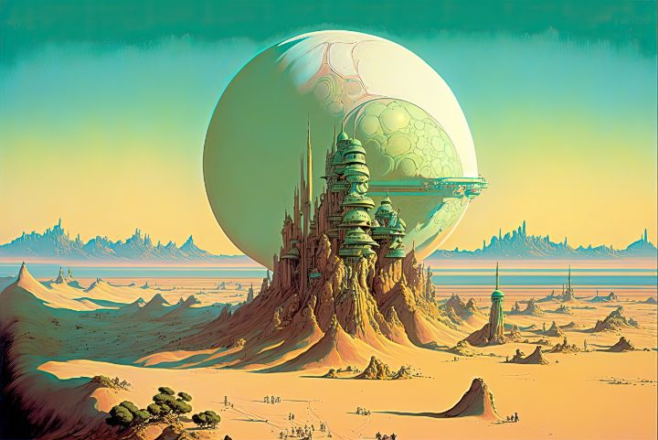

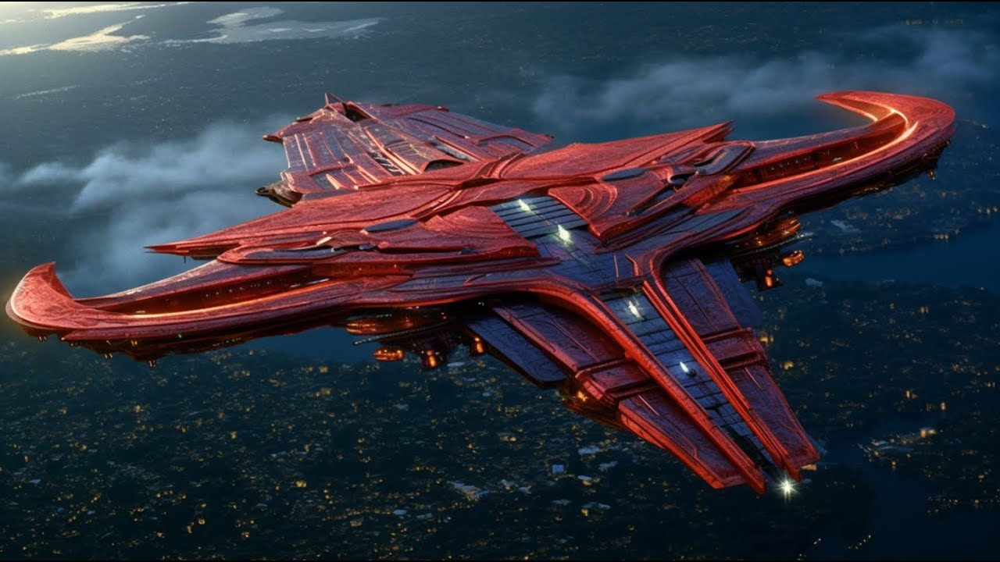
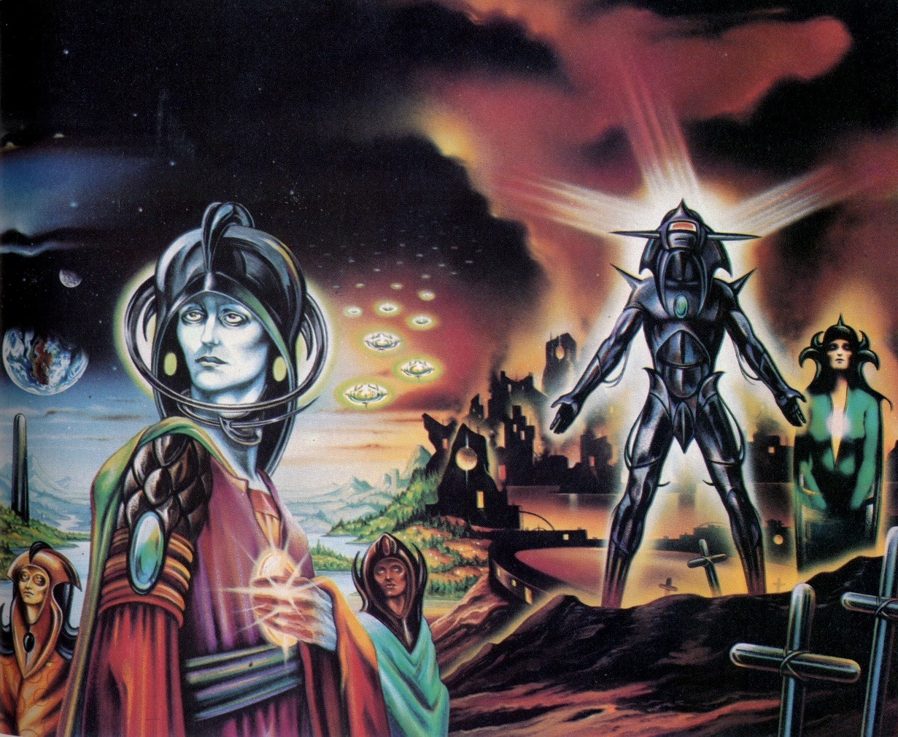
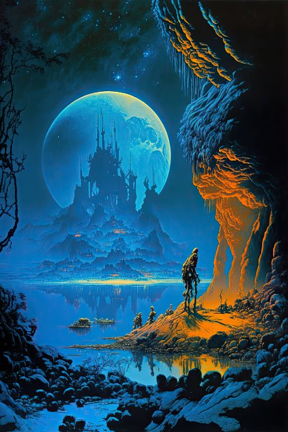
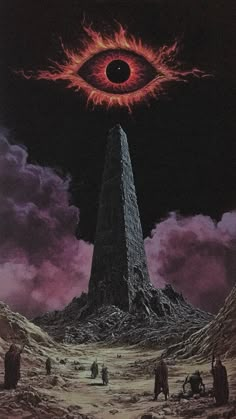
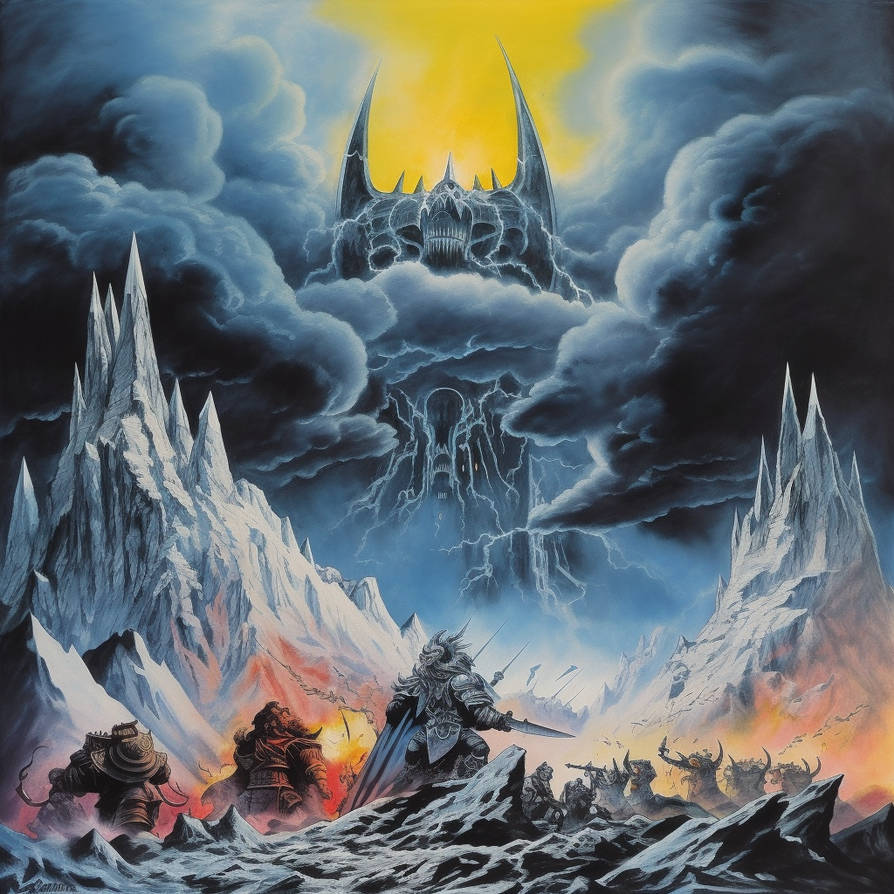
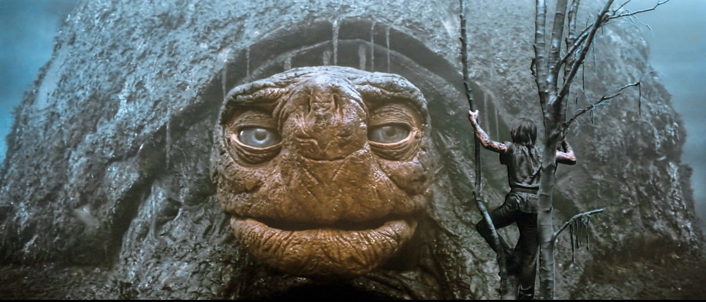
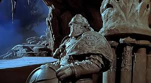
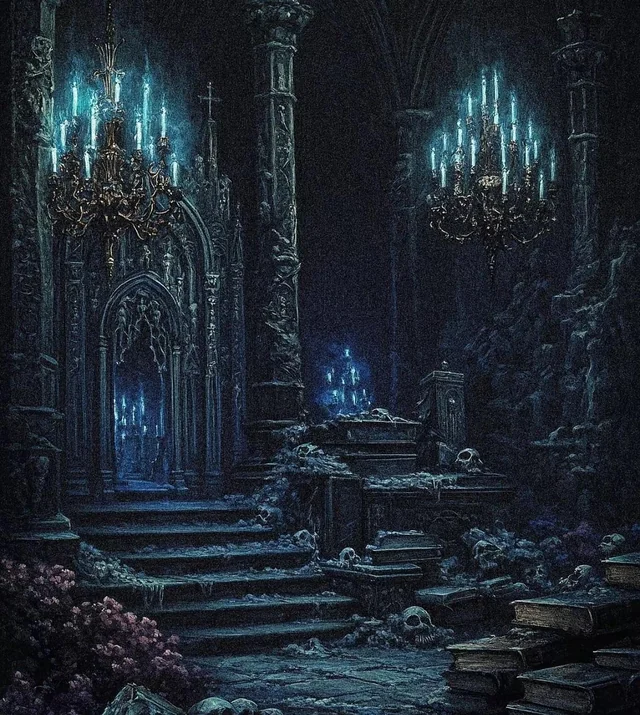
Here's what I'm thinking kind of gives this style, but there might be more to it:
- darker colors, specifically more shades of blue and purple
- more desaturated colors
- use of fog and mist
At least I think that's what is going on. I think I do like desaturated colors though sometimes. Like when you look at images from space a lot of times the planets are sort of dull colors.
Fog is also really great too. I think that kinds of adds to ambiance of minecraft actually, even though it's just used to prevent you seeing past the world edge.
Looking at these pictures it almost looks like the blue is turned up or something. Or at least there are more blue colors.
Terrain Gen
The game has a minecraft style terrain gen with some differences:
- Chunks are generated by seed on demand and never saved
- Chunks are in a heirachy. (see explanation down below)
- World height limits are -12,000 to 12,000 meters
- Blocks are 0.8 m cubes instead of 1 m cubes (for more detail work)
- Erosion with lakes, streams, rivers (that flow down hill and make sense)
I've been doing this by using a heirachy of chunks. The first chunks I load in are 2097152 blocks wide. Each of these is split into 256 chunks that are 131072 blocks wide. Each of these is also split up and split up again in this heirachy
- 2097152
- 131072
- 8192
- 512
- 64
- 16
- 8
- 4
- 2
- 1
This has allowed me to sort of do a level of detail esk thing, where I load in a smaller amount of actual blocks nearest to the player, and then load larger and larger place holders for chunks farther away. Here's one of the early renders I got working:
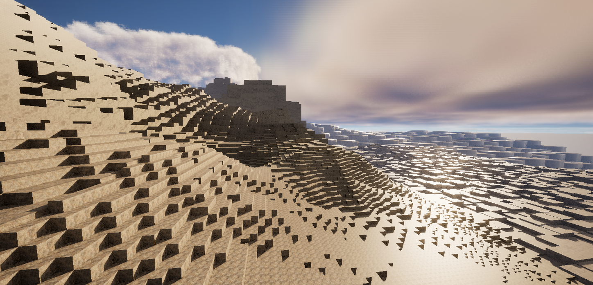
Pretty cool eh! You can see that farther out in the distance the blocks are larger. This allows me to render out ~10,000m for the same amount of blocks as rendering 256m in minecraft. I thought this would be nice way to allow you to see more of a long distance view in the game. It does come at the cost of blockiness farther out though.
The image above was taken before I implemented erosion or did anywork on rendering different types of blocks like grass or different kinds of rock. Planning the heirachy was a bit tricky since I had to divide the chunks up evenly for each sub group. To figure this out I drew this diagram/picture which I thought was actually kind of pretty to look at as well:

Here the pink squares are 512 block chunks, and then the smallest red squares are the actual blocks. The player would be in the center of this image.
For the past few months I've been struggling with erosion which turned out to be really complicated (haha no kidding).
My basic system is the following
- Make gradual decents down Terrain
- Run rivers down slopes
- create a few lakes
Sounds simple right? WRONG!!!
One of the most challenging aspects of this is that I don't load in all the world chunks at once.
I've found that I have to start at the highest level chunk, run the rivers around it's sub chunks, and at that point agree on where the rivers should connect between those sub chunks. Tricky!
Then once I start generating those sub chunks, I have to make sure I get the river to come out at the previously agreed upon point. Through many attempts and stepping with the debugger, I've arrived at this system
- Start at each sub chunk and make a gradual downhill slope to the chunk exit
- Explore Outwards from chunk exits to make paths
- Make the actual rivers through the chunk
- Make little rivers from each sub chunk to one of the main rivers
- Make some random lakes for fun
Something that really helped was making a way to visualize the chunks while I was in the debugger. Since I was running the terrain gen continuously, I couldn't view the terrain in the game, so I made a little tool that printed out the chunk to a file. Here's a screenshot of the output of this:

Kind of hard to see, but the little arrows indicate the way water is flowing and the number in the bottom left of each chunk (square) is the height of that chunk. Key:
- Arrows show water flow direction
- Numbers next to arrows show the flow amount
- Number in the bottom left is the chunk height
- Number in the top left is the chunk index (not important)
- La means a chunk is a lake
I'm still currently debugging this but as I've got to know and understand this problem I've been able to simplify my solution a lot. I've noticed with problems like this, you typically have to create a failed solution so you can get to know the problem better. Then the second time around you can make a really good solution. Sometimes it takes more tries than that, but usually I've never had to restart more than once (thankfully).
Wizardry
Here's my ideas for wizardry. Currently I haven't done any work on this
- Spells work by using stuff in another dimension
- Raw Materials go in, then anything can come out
- Summon lightning from there
- Summon fire
- Summon any element or material
- Healing Spells
- Spells are done by moving mouse or joystick to a certain direction
- Up + Left is more fire, Lightning, light waves
- Up + Right is gases
- Left is Liquids different Elements
- Right is Solids different Elements
- Down is Healing
- It's all on a gradient, Down + Right you might heal them with a metal arm
- Center or Joystick click is entering the Dimensional relm
- You can go into the dimension, and travel instantly to another place
- Inside it look like a dark matrixy kind of place? Maybe non-euclidian Geometry
Dev Log
2/21/2024
Currently I've been working on the erosion (same as always). I decided to do the river tracing differently then I was previously. Now we're starting from outflows and stepping up until we reach all subchunks in a chunk. This is much more efficient then trying to walk from each index to an outflow. The old method was exceptionally complicated when going through lakes or flat areas, where it isn't clear which way is downhill or towards the outflow.
Either way, I have high hopes for this method which seems to be less complicated and more efficient. I also think it might be less likely for infinite loops or other bad crashes to happen. We'll see though.
9/22/2025
Well it appears I wasn't very diligent with this dev log 😂. But a lot has changed since febuary last year. I finished erosion for the most part and have got that working pretty well I think.
I've also done a few more major things:
- Created the server for multiplayer, though not called or run by the game yet
- Made plant generation
- Created a handful of tracks for game music
- Created basic setup for magic casting
- Got placing and deleting blocks working
- Created basic AI for talking with NPCs. (still working on filling this out with our training process)
- Got character editing working for the most part
Currently I'm working on fluid simulation which has been pretty fun. These aren't full fluid simulations, and the water doesn't respond quickly. So it's kind of like a real fluid simulation but in slow motion and not as reactive. Kind of had to do this to avoid burning out everyone's computers. But if you divert a river you might be able to create a flood which I think will be fun.
I've also started work on building generation. So far I've mostly just done research about architecture and I'm trying to get a handle on how to go about this. But I think I've got a pretty good idea.
So I've been switching back and forth between these two things. I've found that switching between projects is kind of nice actually. Keeps things fresh and helps with motivation.
Either way, I think the game is really starting to come together and I think it might not be too long before it's time to put out an initial release. Maybe I already could, but I think it'd be good to have more of the basic features complete so that the game is still interesting in the initial release. Kind of cool though, this is the longest I've ever stuck with a project! I think I won't give up at this point.
10/28/2025
Looks like it's been a while again, so I'll make another entry. Maybe I should have made another entry in a months time, but probably better than a 1.5 year hiatus 😂!
The biggest change currently is that I have switched to Godot! I'm still wondering if that was the right move, but I think it has some good benefits:
- Godot is simpler and less bulky. I can easily keep the entire engine executable inside the project itself
- Godot is free and has no licensing
- My code can largely be imported into Godot as you can use c++
- You can create meshes completely in code which makes it so I don't have to manage assets
The switch was largely spurred when I finished fluid simulations and was looking to add a new asset for a water block in unreal. Some reason everything was broken in the editor and I couldn't create a new asset. (Something to do with opening an old project in an upgraded version of the editor)
I got that fixed by creating a new project and copying things bascially, but that got me down the road of creating meshes purely in code. And it turns out Godot can do that where it's very challenging or impossible to do in unreal (at least at runtime).
I think typically you wouldn't want to create assets in code, but since I'm just making everything from blocks it makes sense I think.
But yeah, got pretty frustrated with Unreal, and saw some benefits to Godot so I made the switch. So far I've got terrain gen up and running in Godot. It's pretty performant so far and seems to run just as fast as it did in unreal which is great!
I also got my player controller code translated mostly, and I'm currently working on block editing stuff. However I did run into issues with getting a forward vector of my camera. Some reason it's all wonky even though the camera appears to look in the correct directions during gameplay. Not sure what's up there but I think I found a work around.
But yeah it's kind of been a relief to switch to Godot honestly, I love how much more simple it is compared to Unreal.
So once I finish the transition I'll finish up fluid simulations and will be on to building/city generation which I'm excited about.
12/10/2025
I finished translating to Godot! Took like 4 weeks unfortunately. We'll have to see if it's worth it but things are moving a lot faster in Godot, mostly due to it being lightweight and quick to startup.
So I actually finished fluid simulations! Pretty much anyway, I think I saw a bug but that's besides the point.
Initially it was kind of rough and just made itself into a pyramid 😂
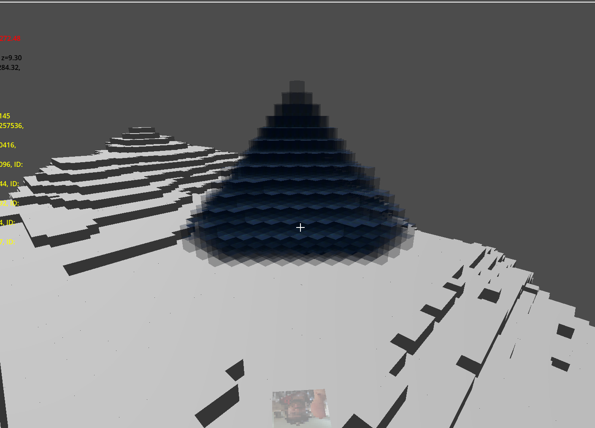
But then I got it working:
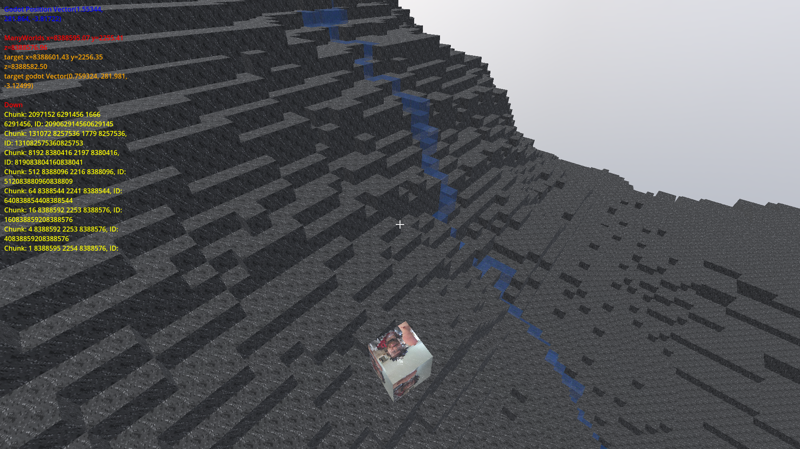
Originally my algorithm was to pick random blocks each frame and add a new water block next to them. That's what gave me the pyramid. Turns out the best algorithm was to walk a block down the hill basically.
Now I'm working on building generation. I think it might not actually be too bad. Hopefully the buildings don't all look the same hehe.
But yeah we're moving boy!